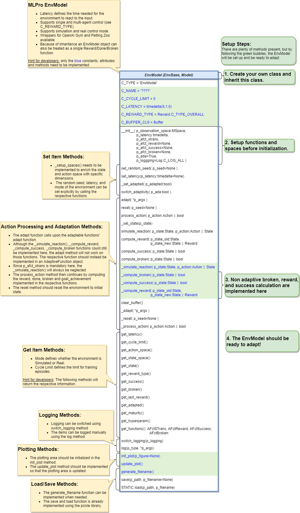

Custom Environments Model¶
Environment Model Creation
To create environment model, the adaptive function needs to created first. In this case, our adaptive function will predict the next state of the environment based on provided action.
from mlpro.sl.pool.afct.afct_pytorch import TorchAFct, TorchBufferElement, TorchBuffer # Create the adaptive function based on Pytorch adaptive function module. class OurStatePredictor(TorchAFct): C_NAME = "Our State Predictor" C_BUFFER_CLS = TorchBuffer def _setup_model(self): # Setup your neural network # Setup your optimizer # Setup your loss function def _input_preproc(self, p_input: torch.Tensor) -> torch.Tensor: # Do something here for pre-processing input input = something return input def _output_postproc(self, p_output: torch.Tensor) -> torch.Tensor: # Do something here for post-processing output output = something return output def _adapt(self, p_input: Element, p_output: Element) -> bool: # Define you adaptation or how to update your neural network return True
After that, we need to create another class that is inherited from the actual environment module and EnvModel, in this case RobotHTM. For now, we only use the state transition model. The reward, success and broken model are taken from the original environment module.
from mlpro.rl.model_env import EnvModel from mlpro.rl.pool.envs.robotinhtm import RobotHTM class OurEnvModel(RobotHTM, EnvModel): C_NAME = "Our Env Model" # Put necessary input argument in initialization def __init__( self, p_num_joints=4, p_target_mode="Random", p_ada=True, p_logging=False, ): # Initialize the actual environment to get all environment functionalities, such as # _simulate_reaction, _reset, _compute_reward, _compute_broken and _compute_success RobotHTM.__init__(self, p_num_joints=p_num_joints, p_target_mode=p_target_mode) # Setup Adaptive Function afct_strans = AFctSTrans( OurStatePredictor, p_state_space=self._state_space, p_action_space=self._action_space, p_threshold=1.8, p_buffer_size=20000, p_ada=p_ada, p_logging=p_logging, ) # In this case set only p_afct_strans, which tells the module to use # _simulate_reaction from the adaptive function instead of from the actual environment # Set to None to use function such as compute_reward, compute_broken and compute_success # from the actual environment EnvModel.__init__( self, p_observation_space=self._state_space, p_action_space=self._action_space, p_latency=timedelta(seconds=self.dt), p_afct_strans=afct_strans, p_afct_reward=None, p_afct_success=None, p_afct_broken=None, p_ada=p_ada, p_logging=p_logging, ) self.reset()